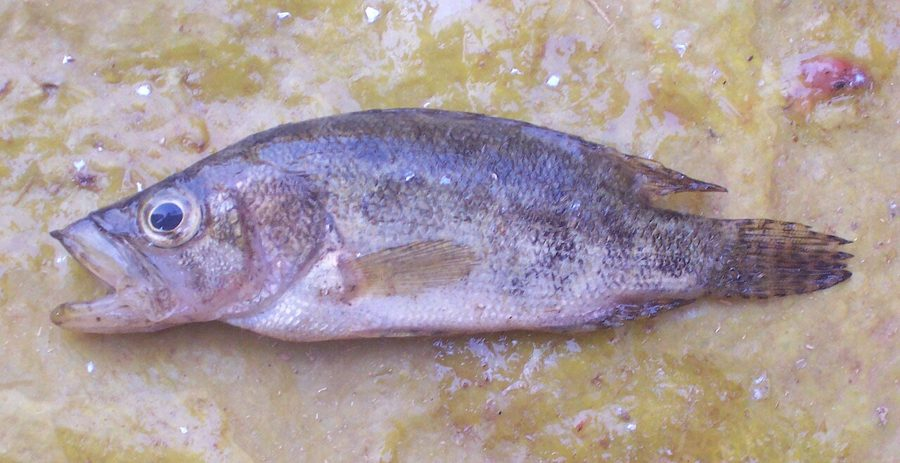

भेदईGangetic Leaffish
Nandus nandus · Nandidae · FSH-0076

- Scientific name वैज्ञानिक नाम
- Nandus nandus (Hamilton, 1822)
- Family कुल
- Nandidae
- Hindi हिंदी
- भेदई
- Local names स्थानीय नाम
- gangetic leaffish, mottled leaffish, bhedai, bhedi
- Status here यहाँ की स्थिति
- native
- Movement आवागमन
- Resident, here all year
- Known from कहाँ दर्ज
- Others have published records from the wider Awadh–Purvanchal plain, none yet from Basti–Ayodhya अवध–पूर्वांचल से दूसरों के प्रकाशित अभिलेख, बस्ती–अयोध्या से अभी नहीं
- IUCN IUCN
- not evaluated
- Review समीक्षा
- not yet reviewed
When to look कब देखें
Present all year. साल भर मौजूद।
Uses and possibilities उपयोग और संभावनाएँ
Drawn from the documented uses in the profile below, where each is labelled traditional, current or a research lead. All uses →
Tell it apart from इनसे अलग पहचानें
भेदई / Gangetic Leaffish
Nandus nandus (Hamilton, 1822) — Nandidae
भेदई — तराई के दलदलों, तालों और जलकुंभी से भरे सुस्त पानी में पाई जाने वाली एक अत्यंत गुप्त शिकारी मछली, जो सूखे पत्ते जैसी दिखती है और जिसका मुंह बहुत बड़ा तथा आगे की ओर फैलने वाला होता है।
Quick Identification त्वरित पहचान
| Feature | Description |
|---|---|
| Body shape | Deep, laterally compressed, oblong body mimicking a submerged rotting leaf |
| Mouth structure | Highly protrusible, cavernous mouth with cleft extending far behind the eye |
| Coloration | Mottled brassy-brown to greenish-brown with irregular dark blotches and vertical marbling |
| Fins | Long spiny dorsal fin with 12 to 14 strong spines; rounded caudal fin |
| Ambush habit | Drifts or rests motionlessly among submerged weeds, striking rapidly at small fish |
Camouflaged, deep-bodied predatory fish closely mimicking a decaying water-logged leaf. It features a cavernous, highly protrusible mouth with jaws that extend backwards well beyond the rear margin of the eye. Coloration is a cryptic mottled olive-brown or brassy-yellow with dark brown blotches and three irregular vertical bands. It lurks motionlessly among dense water weeds, ambushing smaller fish.
हिंदी: सूखे पत्ते जैसी दिखने वाली गहरे भूरे रंग की शिकारी मछली। इसका मुंह बहुत बड़ा होता है जो शिकार पकड़ने के लिए आगे की ओर खुलता है। यह जलकुंभी और खरपतवार के बीच बिल्कुल शांत रहकर शिकार करती है।
Morphology शारीरिक संरचना
| Feature | Description | Source |
|---|---|---|
| Total length (maximum) | 20 cm TL | Froese & Pauly (2025), FishBase |
| Mouth cleft | Cavernous, deeply cleft, extending far behind the posterior border of the orbit | Day (1889) |
The body is oblong, deep, and strongly compressed. The snout is pointed and the head is large and compressed. The mouth is exceptionally large, terminal, and strongly protrusible, with the maxillary bone extending well past the posterior margin of the eye when closed. Both jaws are armed with bands of villiform teeth; teeth are also present on the vomer, palatines, and parasphenoid. The opercle bears a sharp spine. The dorsal fin is long and continuous, with 12 to 14 stiff spines (Jayaram 2010) and 11 to 13 soft rays (Talwar & Jhingran 1991). The anal fin has 3 strong spines and 7 to 9 soft rays (Day 1889). The caudal fin is rounded. The lateral line is interrupted below the soft dorsal fin. Coloration is dull brassy-brown or greenish-olive, marbled with dark vertical blotches and bands.
हिंदी: FishBase (Froese & Pauly 2025) के अनुसार अधिकतम कुल लंबाई 20 सेमी होती है। मुंह अत्यंत बड़ा और गुफानुमा होता है जो आंखों के पीछे तक खुलता है (Day 1889)। शरीर पर भूरी-काली चित्तियां होती हैं।
Behaviour & Ecology व्यवहार एवं पारिस्थितिकी
A solitary, sedentary ambush predator that inhabits dense, tangled beds of aquatic vegetation (Hydrilla, Ceratophyllum, Eichhornia). It rarely swims actively in open water. Instead, it tilts its body sideways, drifting lazily through the water weeds like a detached waterlogged leaf carried by a sluggish current. When an unsuspecting small fish or prawn wanders within striking distance, the leaffish rapidly shoots its premaxillae forward, creating a sudden vacuum that sucks the prey into its cavernous jaws in a fraction of a second.
हिंदी: यह अकेले रहने वाली और झाड़ियों में छिपकर बैठने वाली मछली है। यह पानी में तैरने के बजाय पत्ते की तरह तिरछी होकर बहती है। जैसे ही कोई छोटी मछली पास आती है, यह अपना बड़ा मुंह खोलकर पानी के खिंचाव से उसे निगल लेती है।
Life Cycle / Phenology जीवन चक्र एवं फेनोलॉजी
The breeding season takes place during the monsoon months from May to August (Talwar & Jhingran 1991). Males establish small territories in calm, weed-filled backwaters and undergo subtle color darkening. Courtship occurs among submerged macrophyte stems. The female deposits adhesive eggs that attach firmly to aquatic plants and submerged roots (Day 1889). Fecundity ranges from several hundred to over a thousand eggs depending on female body size. Unlike some labyrinth fishes, it does not construct a bubble nest, but parents remain near the weed beds during early larval hatching.
हिंदी: प्रजनन वर्षा ऋतु में मई से अगस्त के बीच होता है (Talwar & Jhingran 1991)। मादा जलीय पौधों की पत्तियों और जड़ों पर चिपचिपे अंडे देती है (Day 1889)। अंडों से बच्चे निकलने तक वयस्क मछली आसपास ही रहती है।
Host Plants or Prey आहार एवं शिकार
Strictly carnivorous piscivore and predator of aquatic macro-invertebrates. Prey includes small weed-dwelling cyprinid fishes (such as Puntius, Pethia, and Amblypharyngodon), juvenile gouramis, freshwater prawns (Macrobrachium), dragonfly nymphs, water bugs, and amphibian tadpoles. Because its mouth is immensely distensible, it easily engulfs prey items measuring more than half of its own body length.
हिंदी: इसका आहार छोटी मछलियां, झींगा, मेंढक के बच्चे (टैडपोल) और पानी के कीड़े हैं। अपने बहुत बड़े मुंह के कारण यह अपने शरीर के आधे आकार जितनी बड़ी मछली को भी पूरा निगल सकती है।
Predators / Natural Enemies प्राकृतिक शत्रु एवं शिकारी
Large predatory fishes such as the snakehead murrel (Channa striata), giant catfish (Wallago attu), and great snakehead (Channa marulius) prey upon leaffish that venture away from thick weed cover. Fish-eating water birds, including the Indian Pond Heron (Ardeola grayii), Darter (Anhinga melanogaster), and kingfishers, spear them in shallow marshes. The pungent, sharp dorsal and anal spines provide effective passive defense against being swallowed by larger piscivores.
हिंदी: बड़ी सौर और पढ़िन जैसी मछलियां इसका शिकार करती हैं। बगुला और पंगोल चिड़िया दलदल में इसे पकड़ते हैं। इसके पीठ के नुकीले कांटे इसे बड़ी मछलियों के गले में फंसने से बचाते हैं।
Agricultural / Human Relevance कृषि एवं मानव उपयोगिता
Regarded as a tasty small food fish across eastern Uttar Pradesh and Bengal, frequently caught by rural fisherfolk using bamboo plunge baskets (tapa), dip nets, and cast nets in weed-choked wetlands. While it is an aggressive predator that cannot be stocked in nursery carp ponds where it devours carp fry, it is an important natural component of wetland biodiversity and local artisanal subsistence fisheries.
हिंदी: यह स्थानीय ग्रामीणों और मछुआरों के बीच खाने में बहुत स्वादिष्ट मानी जाती है। इसे टापा और जाल से पकड़ा जाता है। हालांकि यह कार्प मछलियों के जीरे (बच्चों) को खा जाती है, इसलिए इसे नर्सरी तालाबों में नहीं डाला जाता।
Expected Locally क्षेत्रीय संभावना
Not a field record. Written from published accounts for eastern Uttar Pradesh. No confirmed local sighting yet — if you have seen it, that is what the atlas needs.
अभी तक स्थानीय पुष्टि नहीं। यह विवरण प्रकाशित स्रोतों से है, किसी अवलोकन से नहीं।
GBIF holds published records across the northern Gangetic plain and throughout wetlands of eastern Uttar Pradesh. It is expected in perennial oxbow lakes, weed-choked drainage channels, and sluggish canal margins across the Ghaghara and Kuwana river basins. A confirmed local record requires a clear photograph displaying the mottled leaf-like coloration, protruded cavernous mouth, and dorsal spines with date and location details.
हिंदी: यह पूर्वी उत्तर प्रदेश के पुराने तालों, जलकुंभी से पटे पोखरों और नहरों की सुस्त शाखाओं में संभावित है। पुष्टि के लिए पत्ते जैसा रंग, बड़ा मुंह और कांटेदार पंख दर्शाने वाली स्पष्ट तस्वीर आवश्यक है।
Distribution वितरण
Widely distributed throughout South Asia, including India, Pakistan, Bangladesh, Nepal, Myanmar, and Thailand. In northern India, it occurs abundantly in floodplains, sluggish streams, oxbow lakes, and swampy wetlands of the Indus, Ganges, and Brahmaputra basins.
हिंदी: यह भारत, पाकिस्तान, बांग्लादेश और म्यांमार के मैदानी जलक्षेत्रों में व्यापक रूप से पाई जाती है। उत्तर भारत में यह सभी शांत और खरपतवार वाले तालों में पाई जाती है।
Research Questions शोध प्रश्न
- How does the expansion of invasive water hyacinth (Eichhornia crassipes) affect local population densities and ambush hunting efficiency?
- What is the kinematic speed and suction volume of premaxillary protrusion during prey capture in natural weed beds?
- What is the impact of seasonal drying of oxbow wetlands on adult survival and recruitment?
- How effectively do its sharp dorsal spines protect it from predation by juvenile snakeheads?
- क्या जलकुंभी के अत्यधिक फैलाव से इस पत्ते जैसी शिकारी मछली को छिपकर शिकार करने में अधिक मदद मिलती है?
- क्या गर्मियों में तालों के सूखने पर यह कीचड़ में दबकर जीवित रह सकती है?
Similar Species समान प्रजातियाँ
| Similar species | Distinction | Hindi distinction | |
|---|---|---|---|
| Climbing Perch \ | Anabas testudineus | Darker, compact body; smaller mouth; prominent serrated opercular spines; specialized air-breathing labyrinth organ | कोई (क्लाइंबिंग पर्च) का मुंह छोटा होता है, इसके कान पर आरी जैसे कांटे होते हैं और यह जमीन पर चल सकती है |
| Banded Gourami \ | Trichogaster fasciata | Deep oval body with thread-like pelvic fins; small mouth; marked with vibrant alternating blue and orange bars | बैंडेड गौरामी के पेट पर धागे जैसी लंबी मूंछें होती हैं और शरीर पर नीली-नारंगी धारियां होती हैं |
| Indian Glassy Fish \ | Parambassis ranga | Translucent, laterally compressed glass-like body; yellow fins with bright blue margins; small mouth | चंदा मछली का शरीर कांच जैसा पारदर्शी होता है और इसका मुंह छोटा होता है |
Field rule: Mottled brassy-brown leaffish with cavernous protrusible mouth extending past eye, and 12 to 14 sharp dorsal spines; weed dweller.
हिंदी: पत्ते जैसी चितकबरी भूरी मछली जिसका बड़ा मुंह आंख के पीछे तक खुलता हो और जिसकी पीठ पर 12 से 14 मजबूत कांटे हों।
Taxonomy & Classification वर्गिकी एवं वर्गीकरण
Original description. Hamilton (1822), An Account of the Fishes Found in the River Ganges and Its Branches, p. 129; type locality: Gangetic provinces, India.
Subspecies. Monotypic species recognized across its South Asian distribution.
Family and order placement. Placed in the Asian leaffish family Nandidae, order Perciformes, class Actinopterygii.
IUCN status rationale. Not evaluated by the IUCN Red List; widely distributed and common across lowland floodplain wetlands.
हिंदी: फ्रांसिस हैमिल्टन ने 1822 में गंगा नदी से इसका विवरण दिया था। यह नन्डिडे (लीफ़फ़िश) कुल की सदस्य है और उत्तर भारत के तालों में आम है।
Photo Gallery फोटो गैलरी
No photos yet — add field photos to media/species/gangetic_leaffish/ and run node scripts/sync_photos.js.
Photos needed आवश्यक फोटो
- [ ] Lateral profile of adult leaffish displaying mottled brassy-brown coloration and erect dorsal spines (चितकबरे रंग और खड़े कांटेदार पंख को दर्शाती वयस्क मछली का पार्श्व दृश्य)
- [ ] Close-up of head showing cavernous mouth with fully extended protrusible jaws (शिकार पकड़ने के लिए आगे फैले हुए बड़े मुंह का क्लोज-अप दृश्य)
- [ ] Individual camouflaged among submerged Hydrilla weed beds in natural wetland (जलीय पौधों के बीच पत्ते की तरह छिपी बैठी मछली का दृश्य)
- [ ] Dorsal view highlighting compressed leaf-like body contour in shallow water (उथले पानी में पत्ते जैसी चपटी शारीरिक बनावट का दृश्य)
- [ ] Typical weed-choked oxbow lake (tal) habitat in eastern Uttar Pradesh (पूर्वी उत्तर प्रदेश के जलकुंभी से भरे पुराने ताल का प्राकृतिक परिदृश्य)
- [ ] Fresh specimen held by artisanal fisherman showing fin spines and coloration (मछुआरे के हाथ में पकड़ी गई ताजी भेदई मछली का दृश्य)
References संदर्भ
- Original description: Hamilton, 1822 — see GBIF.
- Day, F. (1889). The Fauna of British India, Including Ceylon and Burma: Fishes. Vols. 1–2. Taylor & Francis, London.
- Talwar, P. K. & Jhingran, A. G. (1991). Inland Fishes of India and Adjacent Countries. Vols. 1–2. Oxford & IBH Publishing Co., New Delhi.
- Jayaram, K. C. (2010). The Freshwater Fishes of the Indian Region. Narendra Publishing House, Delhi.
- Froese, R. & Pauly, D. (Eds.) (2025). FishBase. World Wide Web electronic publication.
- GBIF Occurrence Data — Nandus nandus, India (2025).
Source file: species/fauna/fish/gangetic_leaffish.md